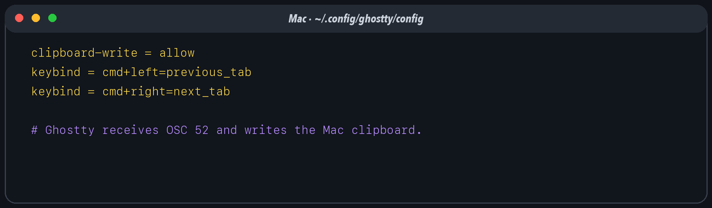

A terminal emulator is a Mac application that turns key presses into bytes and terminal control sequences into pixels, color, cursor motion, mouse reporting, and clipboard operations. The shell is not the terminal. tmux is not the terminal. Ghostty, iTerm2, and Terminal.app are terminals.
The distinction matters because the final write to the macOS clipboard happens at this boundary. A remote program can ask the terminal to set the clipboard with OSC 52, but the local terminal decides whether to honor the request.
Create or edit ~/.config/ghostty/config on the Mac:
clipboard-write = allow
keybind = cmd+left=previous_tab
keybind = cmd+right=next_tabThe first line authorizes programmatic clipboard writes, including
OSC 52 arriving through mosh. The next two make Command–Left and
Command–Right move between Ghostty tabs. Ghostty’s keybinding form is
trigger=action; cmd is an alias for the Super
modifier. Reload the configuration or restart Ghostty after changing
it.

Use Command–V for normal Mac-to-terminal paste. Ghostty inserts clipboard text into the active pseudo-terminal; mosh then carries it to the remote shell. Bracketed paste, when supported by the shell or editor, marks the payload as a paste rather than a stream of individually typed keys.
Apple Terminal can perform the inward half: Command–V pastes, Control–Tab selects the next tab, and Control–Shift–Tab selects the previous tab. If Command–Left/Right is the desired tab gesture, assign those shortcuts to Terminal’s Previous Tab and Next Tab menu commands in System Settings → Keyboard → Keyboard Shortcuts → App Shortcuts.
Terminal.app is not the recommended endpoint for this stack because
it does not provide the same OSC 52 clipboard-write path used here. The
Tailscale-backed ssh mac pbcopy route still works, because
pbcopy writes the clipboard independently of the
terminal.
There are two histories: terminal scrollback outside tmux, and tmux
copy-mode history inside tmux. With set -g mouse on, the
wheel over a tmux pane enters or navigates copy-mode, so long command
output remains inspectable. Press q or Escape to leave
copy-mode. If an application owns the alternate screen or mouse
reporting, hold Shift when needed to ask the terminal to handle a
selection directly.